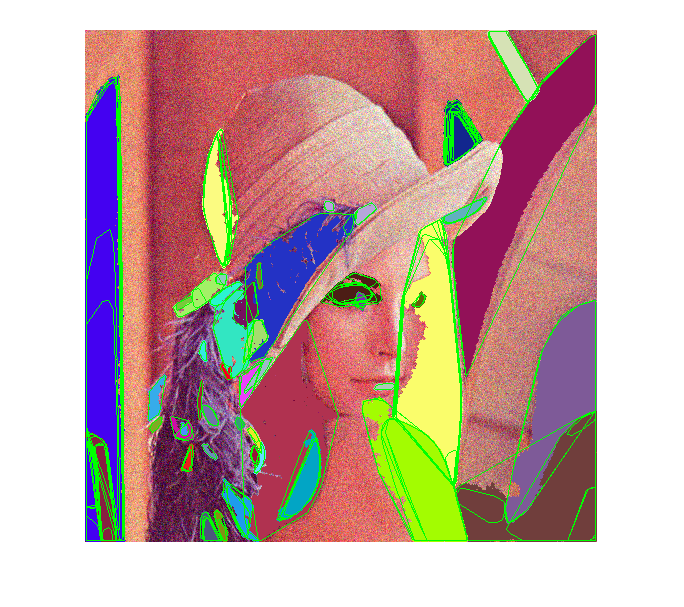

Maximally Stable Extremal Regions (MSER)
This program demonstrates how to use MSER to detect extremal regions.
Sources:
open webcam
cap = createVideoCapture([], 'lena'); assert(cap.isOpened(), 'Failed to open video capture'); img = cap.read(); assert(~isempty(img), 'Failed to read frame');
create MSER extractor
mser = cv.MSER();
main loop
hImg = imshow(img); while ishghandle(hImg) % read next frame img = cap.read(); if isempty(img), break; end % extract MSER regions from grayscale image gray = cv.cvtColor(img, 'RGB2GRAY'); [regions, rects] = mser.detectRegions(gray); % visualize MSER regions for i=1:numel(regions) % draw pixel lists (using random colors) clr = randi([0 255], [1 3]); img = cv.circle(img, regions{i}, 1, 'Color',clr); end if true % compute convex hulls and draw them hulls = cellfun(@(r) cv.convexHull(r), regions, 'UniformOutput',false); img = cv.polylines(img, hulls, 'Closed',true, 'Color',[0 255 0]); else % fit ellipses and draw them rrects = cellfun(@(r) cv.fitEllipse(r), regions); img = cv.ellipse(img, rrects, 'Color',[0 255 0]); end if false % draw bounding boxes img = cv.rectangle(img, rects, 'Color',[255 0 255]); end % show result set(hImg, 'CData',img); drawnow; end
close webcam
cap.release();